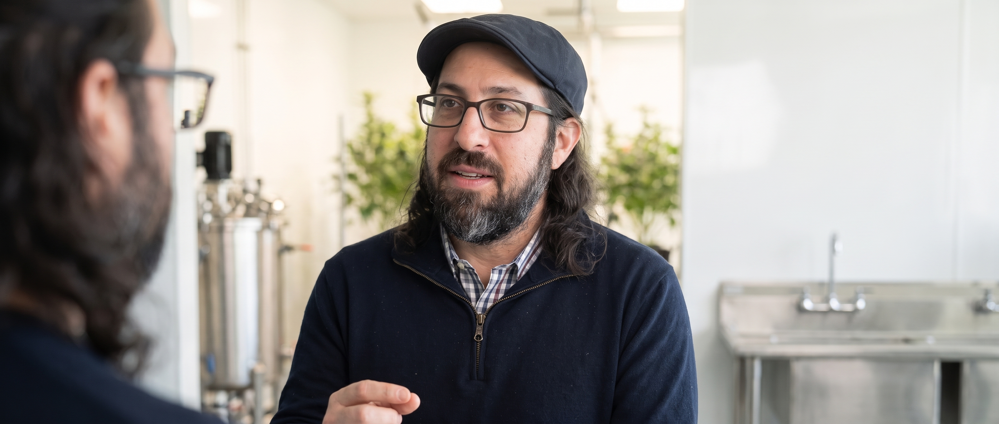

Section C
Photo signature and email starters.
01
Email signature
Photo signature first. Download the profile picture if your inbox blocks remote images.
Photo signature
<table role="presentation" cellpadding="0" cellspacing="0" style="font-family:Arial,Helvetica,sans-serif;color:#1C2430;border-collapse:collapse">
<tr>
<td style="padding:0 16px 0 0;vertical-align:middle">
<img src="https://brandtherapy.florianp.com/adam-freed/os/images/use-today/adam-signature-photo-20260726.png" width="72" height="72" alt="Adam Freed" style="display:block;border-radius:50%;border:2px solid #004DC2">
</td>
<td style="padding:0 0 0 16px;vertical-align:middle">
<div style="font-size:18px;font-weight:700;line-height:1.2;color:#1C2430">Adam Freed</div>
<div style="padding-top:4px;font-size:12px;font-weight:700;color:#004DC2;letter-spacing:0.02em">Independent cannabis data and operations advisor</div>
<div style="padding-top:8px;font-size:13px;color:#444342;font-style:italic">Your numbers should be on speaking terms.</div>
<div style="padding-top:10px;font-size:13px"><a href="https://www.freedsolutions.com" style="color:#004DC2;text-decoration:none">freedsolutions.com</a> · <a href="https://www.linkedin.com/in/adam-freed-60173568" style="color:#004DC2;text-decoration:none">LinkedIn</a></div>
</td>
</tr>
</table> Compact photo signature
<table role="presentation" cellpadding="0" cellspacing="0" style="font-family:Arial,Helvetica,sans-serif;color:#1C2430;border-collapse:collapse">
<tr>
<td style="padding:0 12px 0 0;vertical-align:middle"><img src="https://brandtherapy.florianp.com/adam-freed/os/images/use-today/adam-signature-photo-20260726.png" width="56" height="56" alt="Adam Freed" style="display:block;border-radius:50%"></td>
<td style="padding:0;vertical-align:middle">
<div style="font-size:16px;font-weight:700">Adam Freed</div>
<div style="font-size:12px;color:#004DC2;font-weight:700">Data Integrity · Cannabis operations</div>
<div style="padding-top:6px;font-size:12px"><a href="https://www.freedsolutions.com" style="color:#004DC2;text-decoration:none">freedsolutions.com</a> · <a href="https://www.linkedin.com/in/adam-freed-60173568" style="color:#004DC2;text-decoration:none">LinkedIn</a></div>
</td>
</tr>
</table> Paste into Gmail / Outlook as HTML signature. Photo is hosted on your Brand OS so it loads in sent mail.
02
Email examples
Operator brief, working session, and follow-up.

Adam Freed · Operator brief
The reports look fine. The data does not.
If the source and the dashboard disagree, the work is not finished.
Start with the handoff that breaks first. Make that truth visible across every system that touches it.
Read the full briefAdam Freed · Working session
Bring the reports that do not agree.
For founders who already suspect the dashboard is lying and want the real map.
[What we examine] · [Date] · [Who should be in the room]

Personal note
Keep the useful part moving.
[Name],
The break I kept thinking about was [specific handoff]. The next step I would take: [one useful action].
If useful, I can send a short agenda for a working session.
Adam
03
Keep it consistent
Subject line
- Clear before clever
- Name the break, not a teaser
- No false urgency
- No mystery bait
Body
- One useful idea
- Short paragraphs
- One specific fact or handoff
- One clear next action